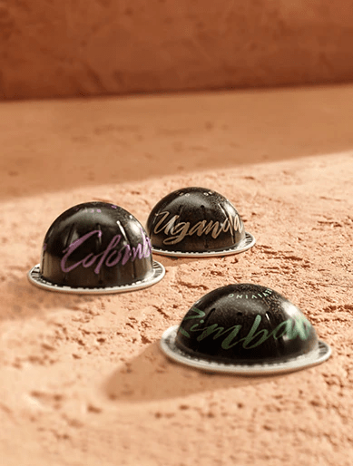
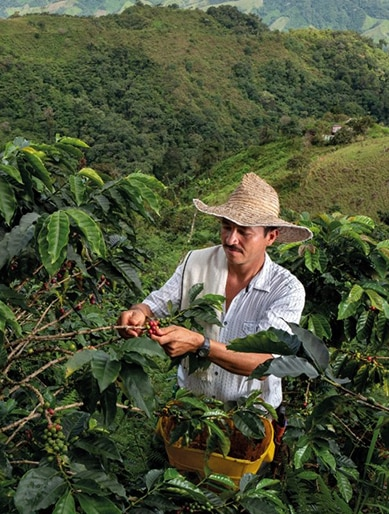

함께 만드는 좋은 커피의 가치
네스프레소는 커피 한잔으로 사회와 환경에 긍정적인 변화를 만들고 있습니다. 네스프레소 커피 한 잔에 담긴 가치를 확인해 보세요.




네스프레소와 당신이 함께 만든 긍정적인 변화를 확인해 보세요
we make green moments
같이 만드는 그린 모먼트
우리의 일상 속 작은 실천이 모여 환경에 긍정적인 변화를 만듭니다.
당신도 좋은 커피를 위한 노력에 함께해 주세요.